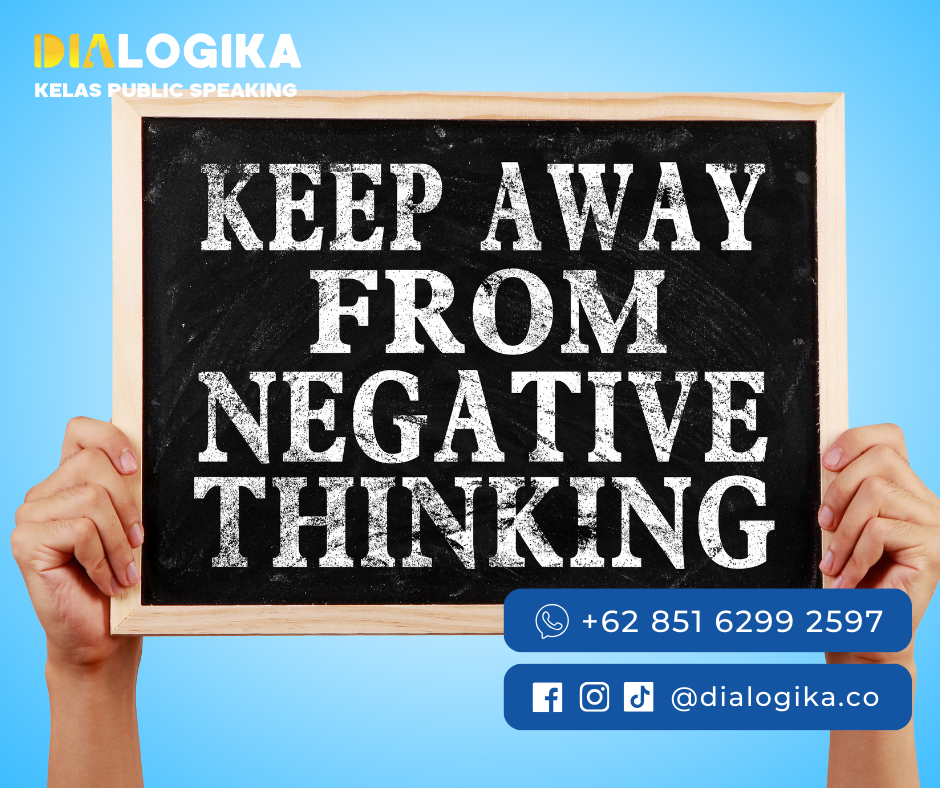

Negative Self-Talk: Contoh dan Cara Mengatasinya
Negative Self-Talk - Setiap manusia pasti pernah melakukan kesalahan. Dari kesalahan-kesalahan yang sudah dibuat manusia selalu belajar dan melakukan evaluasi. Saat kamu melakukan evaluasi kamu pasti pernah tanpa sadar mengkritik diri sendiri, bukan?
Atau saat kamu hendak memulai sesuatu, suara hati kamu berkata, "Ah, aku pasti tidak bisa!" Itulah yang disebut dengan Negative Self Talk
Secara sederhana, self talk adalah dialog internal yang terjadi dalam pikiran kita. Dialog ini bisa berupa kata-kata positif yang membangun atau negatif yang meruntuhkan.
Dalam artikel ini, kita akan membahas cara mengatasi negative self talk yang seringkali menghambat langkah kita dalam meraih kesuksesan dan kebahagiaan.
Apa itu Self talk?
Self-talk adalah proses internal di mana seseorang berdialog dengan dirinya sendiri, yang bisa berupa pikiran atau kata-kata yang diucapkan secara diam-diam. Ini adalah bagian dari monolog internal yang terjadi secara alami dalam pikiran kita sepanjang hari. Self-talk bisa bersifat positif atau negatif dan memiliki pengaruh yang signifikan terhadap bagaimana kita merasakan dan bertindak dalam berbagai situasi.
Adapaun Self-talk dibagi menjadi dua :
Positive Self Talk yaitu melibatkan pernyataan afirmatif dan penguatan diri yang membantu membangun kepercayaan diri dan mengatasi tantangan. Contohnya termasuk pikiran seperti "Saya bisa melakukan ini," "Saya memiliki kekuatan untuk mengatasi ini," atau "Saya layak mendapatkan kebahagiaan."
Negative Self Talk di sisi lain, sering kali kritis dan merusak, menyebabkan perasaan tidak aman dan kegagalan. Ini termasuk pikiran seperti "Saya tidak akan pernah bisa melakukannya," "Saya selalu gagal," atau "Tidak ada yang menyukai saya."
Self-talk adalah komponen penting dari banyak teori psikologis dan dianggap memiliki peran kunci dalam teori-teori seperti kognitif perilaku, di mana pola pikir seseorang diyakini mempengaruhi perilaku dan emosi mereka.
Mengenali dan mengubah negative self talk menjadi positif adalah strategi yang sering digunakan dalam terapi psikologis untuk membantu individu mengatasi masalah emosional dan perilaku.
Strategi Mengatasi Negative Self Talk
1. Tantang Pikiran Negatif


Setiap kali pikiran negatif muncul, tantanglah. Tanya pada diri sendiri, "Apakah ini benar?" atau "Apakah ada bukti yang mendukung pikiran ini?" Cara mengatasi negative self talk adalah dengan menggantinya dengan pikiran yang lebih realistis dan berimbang.
2. Mindfulness dan Meditasi
Mindfulness membantu kita untuk tetap berada di saat ini dan mengakui pikiran tanpa menghakimi. Praktik meditasi dapat menenangkan pikiran dan memberi jarak antara diri kita dan negative self talk.
3. Afirmasi Positif

Membangun afirmasi positif adalah cara mengatasi negative self talk yang efektif. Afirmasi adalah kalimat positif tentang diri kita yang, jika diulang-ulang, dapat meningkatkan kepercayaan diri dan mengurangi negative self talk.
4. Mencari Dukungan

Terkadang, kita membutuhkan perspektif orang lain untuk melihat kebaikan dalam diri kita. Jangan ragu untuk mencari dukungan dari teman, keluarga, atau profesional jika negative self talk terasa sulit untuk diatasi sendiri.
"Evaluasi bukanlah akhir perjalanan, itu adalah jembatan menuju peningkatan yang tak terbatas."
Mengembangkan Mindset Positif
Mengembangkan mindset positif adalah proses yang melibatkan pengubahan cara kita memandang diri sendiri, kehidupan kita, dan dunia di sekitar kita. Ini bukan hanya tentang mengganti pikiran negatif dengan yang positif, tetapi juga tentang menciptakan pola pikir yang secara keseluruhan mendukung pertumbuhan, ketahanan, dan kebahagiaan. Berikut adalah beberapa strategi untuk mengembangkan mindset positif :
1. Pengakuan dan Penerimaan
Mengakui pikiran negatif tanpa menghakimi diri sendiri adalah langkah pertama. Penerimaan tidak berarti menyerah, tetapi mengakui realitas tanpa perlawanan yang tidak perlu.
2. Reframing atau Pembingkaian Ulang
Ini melibatkan mengubah perspektif kamu terhadap situasi atau pikiran negatif. Misalnya, daripada berpikir, "Saya gagal dalam tugas ini," kamu bisa membingkai ulang menjadi, "Saya belajar cara yang tidak berhasil, dan saya bisa mencoba cara lain."
3. Praktik Bersyukur
Menulis jurnal kebersyukuran atau secara rutin mengingatkan diri kamu tentang hal-hal yang kamu syukuri dapat meningkatkan perasaan positif dan kepuasan hidup.
4. Visualisasi
Menghabiskan waktu untuk memvisualisasikan hasil yang sukses dapat membantu memperkuat keyakinan dalam kemampuan sendiri dan membuat hasil positif terasa lebih mungkin.
5. Meditasi dan Mindfulness
Praktik ini membantu kamu tetap berada di saat ini, mengurangi kecemasan tentang masa depan, dan mengurangi penyesalan atas masa lalu.
6. Pengembangan Diri
Terus belajar dan mengembangkan keterampilan baru dapat membangun kepercayaan diri dan membantu kamu merasa lebih kompeten dan mampu.
7. Olahraga dan Aktivitas Fisik
Aktivitas fisik secara teratur tidak hanya baik untuk kesehatan fisik tetapi juga meningkatkan mood dan mengurangi stres.
8. Hubungan Sosial yang Positif
Menghabiskan waktu dengan orang-orang yang mendukung dan positif dapat meningkatkan perasaan baik dan membantu Anda mengembangkan sikap yang lebih positif.
9. Menetapkan Tujuan
Menetapkan tujuan yang realistis dan mencapainya dapat memberikan rasa pencapaian dan tujuan.
10. Praktik Kebaikan
Melakukan tindakan kebaikan tanpa mengharapkan imbalan dapat meningkatkan perasaan kebahagiaan dan kesejahteraan.
11. Mengelola Stres
Belajar teknik manajemen stres yang efektif, seperti pernapasan dalam, relaksasi otot progresif, atau yoga, dapat membantu menjaga mindset positif.
12. Penghindaran Perbandingan
Menghindari membandingkan diri kamu dengan orang lain dapat mengurangi perasaan tidak cukup baik dan membantu menghargai pencapaian diri sendiri.
13. Pengulangan Afirmasi
Menggunakan afirmasi positif secara teratur dapat membantu mengubah dialog internal negatif menjadi lebih mendukung dan memotivasi.
Mengembangkan mindset positif adalah proses yang berkelanjutan dan sering kali membutuhkan kesadaran dan usaha yang konsisten. Namun, dengan waktu dan latihan, kamu dapat mengubah cara berpikir dan, sebagai hasilnya, cara kamu merasakan dan bertindak dalam kehidupan.
Menjaga Positive Self Talk
Konsistensi adalah kunci dalam menjaga self talk yang positif. Buatlah kebiasaan untuk mengganti setiap pikiran negatif dengan pikiran positif. Ingat, perubahan tidak terjadi dalam semalam, tapi dengan latihan yang teratur, kamu bisa mengurangi negative self talk dan menggantinya dengan yang positif.
Contoh Slef talk
-
Menggeneralisasi
"Saya selalu gagal."
"Tidak ada yang pernah berjalan dengan baik untuk saya."
Mengkategorikan secara Ekstrem
"Saya benar-benar tidak berguna."
"Saya adalah orang yang paling buruk."
Mengkritik Diri Sendiri
"Saya tidak cukup pintar untuk mendapatkan promosi itu."
"Saya terlalu malas untuk membuat perubahan dalam hidup saya."
Prediksi Negatif
"Saya pasti akan memalukan diri sendiri."
"Tidak ada gunanya saya mencoba, saya akan gagal."
Membaca Pikiran
"Saya tahu mereka semua berpikir saya bodoh."
"Orang-orang pasti tidak suka saya."
Mengabaikan Positif
"Itu tidak dihitung, itu hanya keberuntungan."
"Saya mungkin melakukan itu dengan benar, tapi itu tidak berarti apa-apa."
Fokus pada Negatif
"Saya membuat satu kesalahan dan sekarang semuanya hancur."
"Satu hal buruk terjadi, jadi hari ini adalah hari yang mengerikan."
Harus dan Seharusnya
"Saya harus selalu melakukan yang terbaik."
"Saya seharusnya tidak pernah membuat kesalahan."
Labelisasi Diri
"Saya adalah pecundang."
"Saya hanya seorang pengecut."
Menyalahkan Diri
"Ini semua salah saya."
"Saya yang membuat semuanya menjadi berantakan."
Kesimpulan
Cara mengatasi negative self talk membutuhkan kesadaran dan latihan. Mulailah dengan langkah kecil, dan jangan lupa untuk merayakan setiap kemajuan yang kamu buat. Ingat, kamu memiliki kekuatan untuk mengubah dialog internalmu menjadi sesuatu yang mendukung pertumbuhan dan kebahagiaanmu.